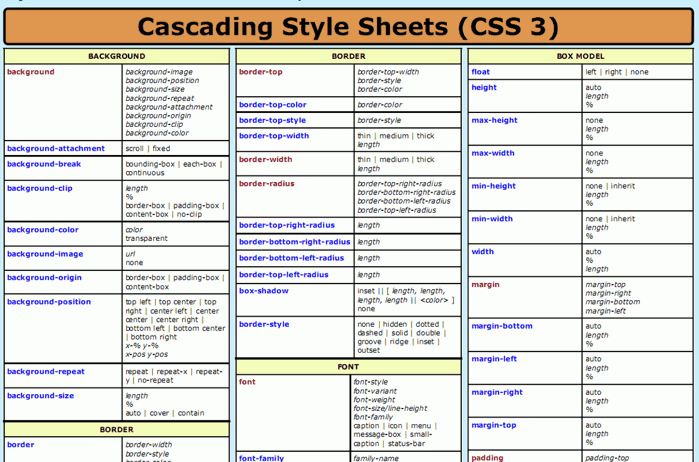
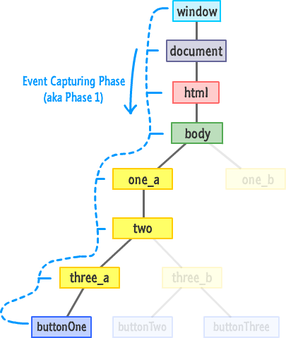

Language used to specify the presentation of structurally markedup documents.
Developed by Hakon Wium Lie, Bert Bos and World Wide Consortium (W3C).
Versions
CSS 1 (W3C Recommendation by December 1996)
CSS 2 (W3C Recommendation by May 1998)
CSS 2.1 (W3C Recommendation by June 2011)
CSS 3
CSS Rule Sets
Consists of selector, followed by a brace-enclosed declaration block,
which contains zero or more semi-colon seperated property declarations
which in turn consists of a property name followed by property value
CSS Selectors
Patterns used to select the elements to be styled
CSS Rule Precendence
author, user, user-agent, normal, important
Resolution: by origin and importance, by specificity, by order
CSS Declarations
Consists of a property, the style attribute that can be changed, and
value
Applied to either all elements of a specific type or only those
elements that match a certain attribute
CSS Preprocessors
Guarantees CSS using a custom language syntax that typically includes
features that don't exist in pure CSS
CSS Frameworks
Provides predefined CSS design functionality that can be reused,
extended or customized
Polyfills
Provides features that developers expect browsers to provide natively

JavaScript
Programming language of HTML and the Web.
Also used by non-browser environments.
Created by Brendan Eich at Netscape
Having versions from 1.0 to 1.8.5.
ECMAScript
Developed by European Computer Manufacturers Association (ECMA)
Imnternational after it adopted JavaScript
ECMAScript Versions
JavaScript 1 (Released in June 1997)
JavaScript 2 (Released in June 1998)
JavaScript 3 (Released in December 1999)
JavaScript 4
JavaScript 5 (Released in December 2009)
JavaScript 5.1 (Released in June 2011)
JavaScript 6 (Projected in Mid 2015)
Document Object Model (DOM) Appilication Programming Interface(API)
Allows access to the Hypertext Markup Language (HTML) document from
within scripts associated with the web page.
Has a DOM tree that represents a parsed HTML document.
JavaScript Event Handling
Event Propagation Order (DOM-compliant Browsers)
Capturing Phase > The event goes down to the element.
Target Phase > The event reached the target element.
Buubling Phase > The event bubbles up from the element.

Event Handler Registration
Method#1 (inline HTML event attribute)
Non-standard, universal support, not recommended
Method#2 (pre-DOM L2)
Non-standard, universal support
Can register only one handler which can be removed by assigning a null
value to an attribute
Method#3 (DOM L2 Registration)
Standard, well-supported
Can register more than one event handler which can be removed by using
removeEventHandler() functtion
Can register handlers on the bubble or capture phase
Uses dispatchEvent() function to trigger event programmatically
Method#4
Can register more than one event handler which can be removed by
detachEvent() function
Can register handlers only on the bubble phase in old MS browsers
Uses fireEvent() function to trigger event programmatically